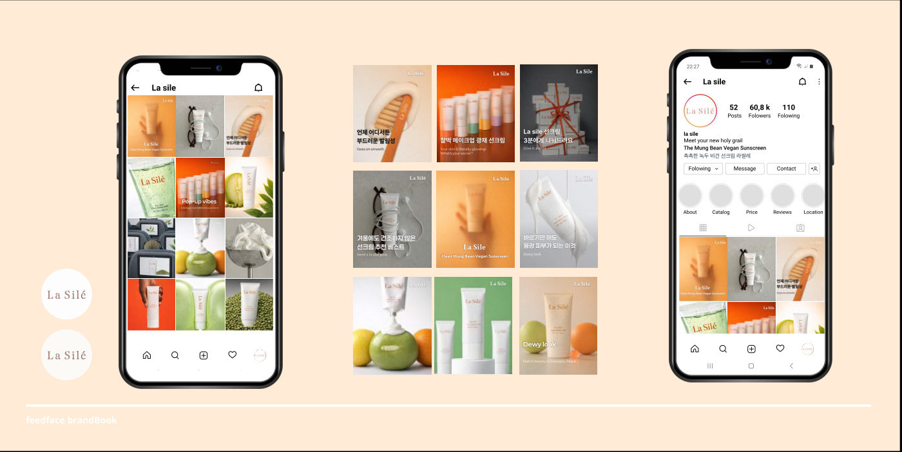
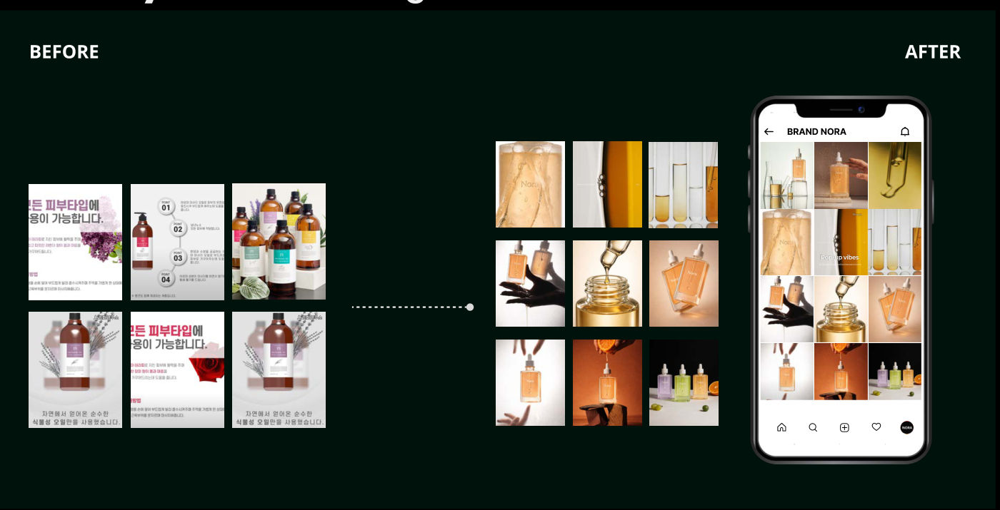
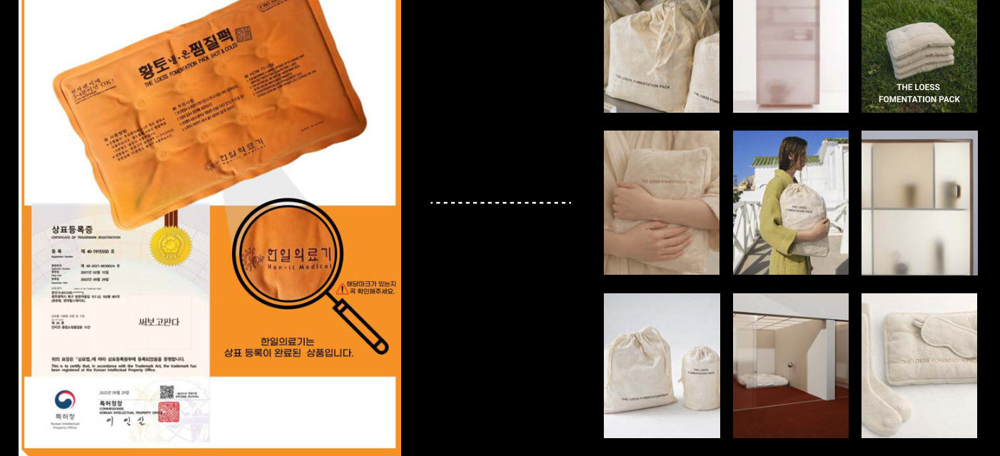

제품력은 좋지만 이미지가 낡은 브랜드 3곳의 비주얼과 피드를 프리미엄 무드로 재설계했습니다.
브랜드
3곳뷰티 2, 라이프스타일 1
역할
브랜드 콘셉트, 비주얼 디렉팅
범위
인스타그램 피드, 패키지 무드
문제와 해결
BeforeAfter
- La Silé 녹두 비건 선크림, 복잡한 카피와 그래픽여백의 미와 초근접 질감 촬영, Muted Green과 Soft Orange
- NORA 바디 오일, 방판 제품 같은 낡은 이미지실험실 도구와 Gold/Amber 조명의 미니멀 SNS 쇼룸
- 황토 찜질팩 숨기고 싶은 할머니 찜질팩광목, 린넨 패키지의 꺼내두고 싶은 오브제 (Cozy Minimalism)
La Silé

NORA Before → After

황토 찜질팩 Before → After
